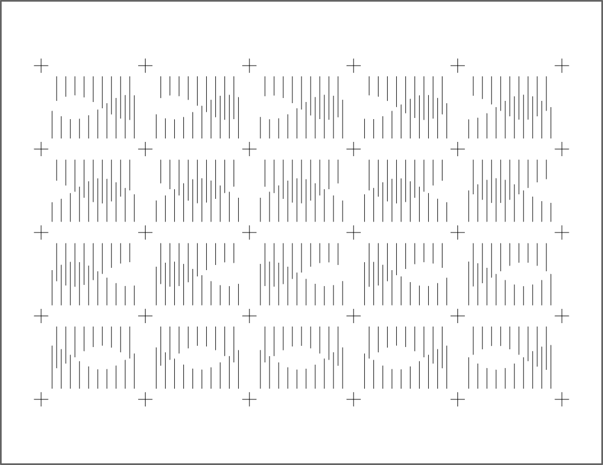
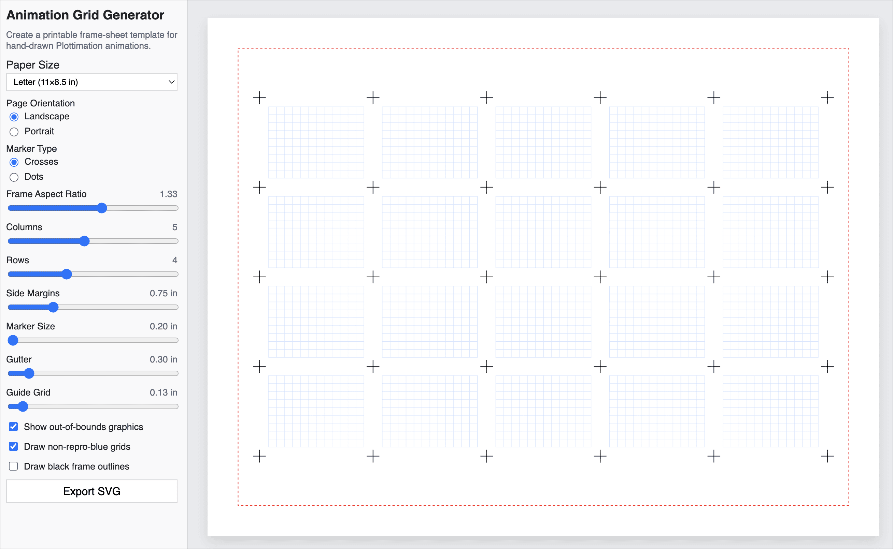

Plottimation Templates
Tools and code to help make frame-sheets for the Plottimation Tool.
p5.js Starter Sketch
Here's a p5.js sketch you can use to get started making frame-sheets:

Animation Grid Generator
The Animation Grid Generator generates printable grids suited for making hand-drawn GIF animations with the Plottimation Tool.
